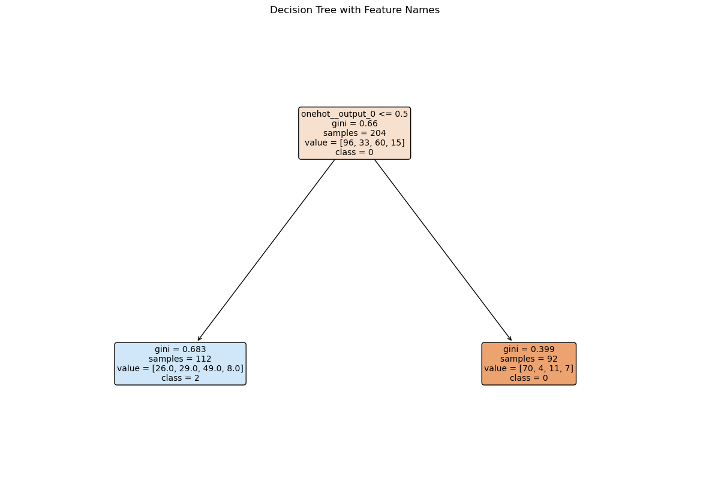

import pandas as pd
import numpy as np
from sklearn.linear_model import LogisticRegression
from sklearn.model_selection import train_test_split, cross_val_score, GridSearchCV
from sklearn.preprocessing import StandardScaler, OneHotEncoder
from sklearn.compose import ColumnTransformer, make_column_selector
from sklearn.pipeline import Pipeline
from sklearn.neighbors import KNeighborsClassifier
from sklearn.tree import DecisionTreeClassifier
from sklearn.metrics import roc_auc_score, confusion_matrix, roc_curve,auc
from plotnine import *Our dataset consists of clinical data from patients who entered the hospital complaining of chest pain (“angina”) during exercise. The information collected includes:
age: Age of the patientsex: Sex of the patientcp: Chest Pain type- Value 0: asymptomatic
- Value 1: typical angina
- Value 2: atypical angina
- Value 3: non-anginal pain
trtbps: resting blood pressure (in mm Hg)chol: cholesterol in mg/dl fetched via BMI sensorrestecg: resting electrocardiographic results- Value 0: normal
- Value 1: having ST-T wave abnormality (T wave inversions and/or ST elevation or depression of > 0.05 mV)
- Value 2: showing probable or definite left ventricular hypertrophy by Estes’ criteria
thalach: maximum heart rate achieved during exerciseoutput: the doctor’s diagnosis of whether the patient is at risk for a heart attack- 0 = not at risk of heart attack
- 1 = at risk of heart attack
ha = pd.read_csv("https://www.dropbox.com/s/aohbr6yb9ifmc8w/heart_attack.csv?dl=1")
ha_clean = ha.dropna()
ha_clean| age | sex | cp | trtbps | chol | restecg | thalach | output | |
|---|---|---|---|---|---|---|---|---|
| 0 | 63 | 1 | 3 | 145 | 233 | 0 | 150 | 1 |
| 1 | 37 | 1 | 2 | 130 | 250 | 1 | 187 | 1 |
| 2 | 56 | 1 | 1 | 120 | 236 | 1 | 178 | 1 |
| 3 | 57 | 0 | 0 | 120 | 354 | 1 | 163 | 1 |
| 4 | 57 | 1 | 0 | 140 | 192 | 1 | 148 | 1 |
| ... | ... | ... | ... | ... | ... | ... | ... | ... |
| 268 | 59 | 1 | 0 | 164 | 176 | 0 | 90 | 0 |
| 269 | 57 | 0 | 0 | 140 | 241 | 1 | 123 | 0 |
| 270 | 45 | 1 | 3 | 110 | 264 | 1 | 132 | 0 |
| 271 | 68 | 1 | 0 | 144 | 193 | 1 | 141 | 0 |
| 272 | 57 | 0 | 1 | 130 | 236 | 0 | 174 | 0 |
273 rows × 8 columns
Q1: Natural Multiclass Models
Fit a multiclass KNN, Decision Tree, and LDA for the heart disease data; this time predicting the type of chest pain (categories 0 - 3) that a patient experiences. For the decision tree, plot the fitted tree, and interpret the first couple splits.
from sklearn.metrics import accuracy_score
# Perform train-test split
X = ha_clean.drop(columns=["cp"])
y = ha_clean["cp"]
X_train, X_test, y_train, y_test = train_test_split(X, y, test_size=0.25, random_state=42, stratify=y)
# Define the preprocessing and model pipeline
knn = KNeighborsClassifier()
ct = ColumnTransformer(
[
("standardize", StandardScaler(), ["age", "trtbps", "chol", "thalach"]),
("onehot", OneHotEncoder(handle_unknown="ignore"), ["sex", "output", "restecg"]),
],
remainder="passthrough"
)
knn_pipeline = Pipeline(
[
("preprocessing", ct),
("Knn", knn)
]
)
# Hyperparameter tuning with GridSearchCV
k = {"Knn__n_neighbors": np.arange(1, 50)}
gscv = GridSearchCV(knn_pipeline, k, cv=5, scoring="accuracy") # Change scoring to "accuracy"
gscv.fit(X_train, y_train)
# Extract the best number of neighbors
best_k = gscv.best_params_["Knn__n_neighbors"]
# Build the best model pipeline
best_k_model = Pipeline(
[
("preprocessing", ct),
("Knn", KNeighborsClassifier(n_neighbors=best_k))
]
)
# Fit the model on the training set
best_model = best_k_model.fit(X_train, y_train)
# Predict on the test data
y_test_pred = best_model.predict(X_test)
# Compute and print the accuracy score on the test set
test_accuracy = accuracy_score(y_test, y_test_pred)
print(f"Cross-validated Accuracy of the best model: {gscv.best_score_:.4f}")
print(f"Accuracy on the test data: {test_accuracy:.4f}")
print(f"Best value for k: {best_k}")
# Confusion matrix
cm = confusion_matrix(y_test, y_test_pred)
print("Confusion Matrix:")
print(cm)Cross-validated Accuracy of the best model: 0.5928
Accuracy on the test data: 0.5362
Best value for k: 19
Confusion Matrix:
[[24 3 5 0]
[ 5 4 2 0]
[ 9 3 9 0]
[ 0 0 5 0]]
Cross-validated Accuracy of the best model: 0.5928
Accuracy on the test data: 0.5362
Best value for k: 19
Confusion Matrix:
[[24 3 5 0]
[ 5 4 2 0]
[ 9 3 9 0]
[ 0 0 5 0]]
# Perform train-test split
X = ha_clean.drop(columns=["cp"])
y = ha_clean["cp"]
X_train, X_test, y_train, y_test = train_test_split(X, y, test_size=0.25, random_state=42, stratify=y)
# Define the preprocessing and model pipeline
ct = ColumnTransformer(
[
("standardize", StandardScaler(), ["age", "trtbps", "chol", "thalach"]),
("onehot", OneHotEncoder(handle_unknown="ignore"), ["sex", "output", "restecg"]),
],
remainder="passthrough"
)
dt_pipeline = Pipeline(
[
("preprocessing", ct),
("DT", DecisionTreeClassifier(random_state=42))
]
)
# Hyperparameter tuning with GridSearchCV
param_grid = {"DT__max_depth": np.arange(1, 21)}
gscv = GridSearchCV(dt_pipeline, param_grid, cv=5, scoring="accuracy")
gscv.fit(X_train, y_train)
# Extract the best max_depth
best_tree_depth = gscv.best_params_["DT__max_depth"]
# Build the best model pipeline
best_tree_model = Pipeline(
[
("preprocessing", ct),
("DT", DecisionTreeClassifier(max_depth=best_tree_depth, random_state=42))
]
)
# Fit the model on the training set
final_model = best_tree_model.fit(X_train, y_train)
# Predict on the test data
y_test_pred = final_model.predict(X_test)
# Compute and print the accuracy score on the test set
test_accuracy = accuracy_score(y_test, y_test_pred)
print(f"Cross-validated accuracy of the best model: {gscv.best_score_:.4f}")
print(f"Accuracy on the test data: {test_accuracy:.4f}")
# Confusion matrix
cm = confusion_matrix(y_test, y_test_pred)
print("Confusion Matrix:")
print(cm)
best_tree_depthCross-validated accuracy of the best model: 0.5833
Accuracy on the test data: 0.5507
Confusion Matrix:
[[24 0 8 0]
[ 4 0 7 0]
[ 7 0 14 0]
[ 0 0 5 0]]
Cross-validated accuracy of the best model: 0.5833
Accuracy on the test data: 0.5507
Confusion Matrix:
[[24 0 8 0]
[ 4 0 7 0]
[ 7 0 14 0]
[ 0 0 5 0]]1import matplotlib.pyplot as plt
from sklearn.tree import plot_tree
# Get the feature names after preprocessing
feature_names = ct.get_feature_names_out()
# Plot the decision tree
plt.figure(figsize=(15, 10))
plot_tree(
final_model.named_steps["DT"],
feature_names=feature_names,
class_names=[str(cls) for cls in sorted(y.unique())],
filled=True,
rounded=True,
fontsize=10
)
plt.title("Decision Tree with Feature Names")
plt.show()
Q2: OvR
Create a new column in the ha dataset called cp_is_3, which is equal to 1 if the cp variable is equal to 3 and 0 otherwise.
Then, fit a Logistic Regression to predict this new target, and report the F1 Score.
Repeat for the other three cp categories. Which category was the OvR approach best at distinguishing?
ha_clean["cp_is_3"] = (ha_clean["cp"] == 3).astype(int)
X = ha_clean.drop(columns=["cp","cp_is_3"])
y = ha_clean["cp_is_3"]
X_train, X_test, y_train, y_test = train_test_split(X, y, test_size=0.25, random_state=42, stratify=y)
log_pipeline = Pipeline(
[
("preprocessing", ct),
("logistic", LogisticRegression())
]
)
params = {"logistic__C":[0.01,0.1,1,10,100]}
logistic_gscv = GridSearchCV(log_pipeline,params, cv=5,scoring="f1")
best_log_model = logistic_gscv.fit(X_train,y_train)
print(f"Best Logistic parameters: {logistic_gscv.best_params_}")
print(f"Best F1 Score (cp = 3): {logistic_gscv.best_score_}")Best Logistic parameters: {'logistic__C': 0.01}
Best F1 Score (cp = 3): 0.0
Best Logistic parameters: {'logistic__C': 0.01}
Best F1 Score (cp = 3): 0.0ha_clean["cp_is_2"] = (ha_clean["cp"] == 2).astype(int)
X = ha_clean.drop(columns=["cp","cp_is_2"])
y = ha_clean["cp_is_2"]
X_train, X_test, y_train, y_test = train_test_split(X, y, test_size=0.25, random_state=42, stratify=y)
log_pipeline = Pipeline(
[
("preprocessing", ct),
("logistic", LogisticRegression())
]
)
params = {"logistic__C":[0.01,0.1,1,10,100]}
logistic_gscv = GridSearchCV(log_pipeline,params, cv=5,scoring="f1")
best_log_model = logistic_gscv.fit(X_train,y_train)
print(f"Best Logistic parameters: {logistic_gscv.best_params_}")
print(f"Best F1 Score (cp = 2): {logistic_gscv.best_score_}")Best Logistic parameters: {'logistic__C': 100}
Best F1 Score (cp = 2): 0.22848527969540217
Best Logistic parameters: {'logistic__C': 100}
Best F1 Score (cp = 2): 0.22848527969540217ha_clean["cp_is_1"] = (ha_clean["cp"] == 1).astype(int)
X = ha_clean.drop(columns=["cp","cp_is_1"])
y = ha_clean["cp_is_1"]
X_train, X_test, y_train, y_test = train_test_split(X, y, test_size=0.25, random_state=42, stratify=y)
log_pipeline = Pipeline(
[
("preprocessing", ct),
("logistic", LogisticRegression())
]
)
params = {"logistic__C":[0.01,0.1,1,10,100]}
logistic_gscv = GridSearchCV(log_pipeline,params, cv=5,scoring="f1")
best_log_model = logistic_gscv.fit(X_train,y_train)
print(f"Best Logistic parameters: {logistic_gscv.best_params_}")
print(f"Best F1 Score (cp = 1): {logistic_gscv.best_score_}")Best Logistic parameters: {'logistic__C': 10}
Best F1 Score (cp = 1): 0.45082251082251085
Best Logistic parameters: {'logistic__C': 10}
Best F1 Score (cp = 1): 0.45082251082251085ha_clean["cp_is_0"] = (ha_clean["cp"] == 0).astype(int)
X = ha_clean.drop(columns=["cp","cp_is_0"])
y = ha_clean["cp_is_0"]
X_train, X_test, y_train, y_test = train_test_split(X, y, test_size=0.25, random_state=42, stratify=y)
log_pipeline = Pipeline(
[
("preprocessing", ct),
("logistic", LogisticRegression())
]
)
params = {"logistic__C":[0.01,0.1,1,10,100]}
logistic_gscv = GridSearchCV(log_pipeline,params, cv=5,scoring="f1")
best_log_model = logistic_gscv.fit(X_train,y_train)
print(f"Best Logistic parameters: {logistic_gscv.best_params_}")
print(f"Best F1 Score (cp = 0): {logistic_gscv.best_score_}")Best Logistic parameters: {'logistic__C': 10}
Best F1 Score (cp = 0): 1.0
Best Logistic parameters: {'logistic__C': 10}
Best F1 Score (cp = 0): 1.0Based on the models for each of the cp categories the best one was the last one when cp = 0 but the f1 score is 1 which means it classified all the cases prefectly which is unlikely.
Q3: OvO
Reduce your dataset to only the 0 and 1 types of chest pain.
Then, fit a Logistic Regression to predict between the two groups, and report the ROC-AUC.
Repeat comparing category 0 to 2 and 3. Which pair was the OvO approach best at distinguishing?
data_1 = ha_clean[(ha_clean['cp'] == 1) | (ha_clean['cp'] == 0)]
X = data_1.drop(columns=["cp","cp_is_3","cp_is_2","cp_is_1","cp_is_0"])
y = data_1["cp"]
X_train, X_test, y_train, y_test = train_test_split(X, y, test_size=0.25, random_state=42, stratify=y)
logistic = Pipeline(
[
("preprocessing",ct),
("logistic",LogisticRegression(max_iter=1000))
]
)
params = {"logistic__C":[0.01,0.1,1,10,100]}
logistic_gscv = GridSearchCV(logistic,params,cv=5,scoring="roc_auc")
best_logistic = logistic_gscv.fit(X_train,y_train)
print(f"Best Logistic parameters: {logistic_gscv.best_params_}")
print(f"Best ROC AUC (0-1): {logistic_gscv.best_score_}")Best Logistic parameters: {'logistic__C': 0.1}
Best ROC AUC (0-1): 0.8503634085213033
Best Logistic parameters: {'logistic__C': 0.1}
Best ROC AUC (0-1): 0.8503634085213033data_1 = ha_clean[(ha_clean['cp'] == 2) | (ha_clean['cp'] == 0)]
X = data_1.drop(columns=["cp","cp_is_3","cp_is_2","cp_is_1","cp_is_0"])
y = data_1["cp"]
X_train, X_test, y_train, y_test = train_test_split(X, y, test_size=0.25, random_state=42, stratify=y)
logistic = Pipeline(
[
("preprocessing",ct),
("logistic",LogisticRegression(max_iter=1000))
]
)
params = {"logistic__C":[0.01,0.1,1,10,100]}
logistic_gscv = GridSearchCV(logistic,params,cv=5,scoring="roc_auc")
best_logistic = logistic_gscv.fit(X_train,y_train)
print(f"Best Logistic parameters: {logistic_gscv.best_params_}")
print(f"Best ROC AUC (0-1): {logistic_gscv.best_score_}")Best Logistic parameters: {'logistic__C': 1}
Best ROC AUC (0-1): 0.7389473684210526
Best Logistic parameters: {'logistic__C': 1}
Best ROC AUC (0-1): 0.7389473684210526data_1 = ha_clean[(ha_clean['cp'] == 3) | (ha_clean['cp'] == 0)]
X = data_1.drop(columns=["cp","cp_is_3","cp_is_2","cp_is_1","cp_is_0"])
y = data_1["cp"]
X_train, X_test, y_train, y_test = train_test_split(X, y, test_size=0.25, random_state=42, stratify=y)
logistic = Pipeline(
[
("preprocessing",ct),
("logistic",LogisticRegression(max_iter=1000))
]
)
params = {"logistic__C":[0.01,0.1,1,10,100]}
logistic_gscv = GridSearchCV(logistic,params,cv=5,scoring="roc_auc")
best_logistic = logistic_gscv.fit(X_train,y_train)
print(f"Best Logistic parameters: {logistic_gscv.best_params_}")
print(f"Best ROC AUC (0-1): {logistic_gscv.best_score_}")Best Logistic parameters: {'logistic__C': 0.1}
Best ROC AUC (0-1): 0.8135087719298246
Best Logistic parameters: {'logistic__C': 0.1}
Best ROC AUC (0-1): 0.8135087719298246OvO was best at distinguishing when only a chest pain of 0 and 1 are in the model.